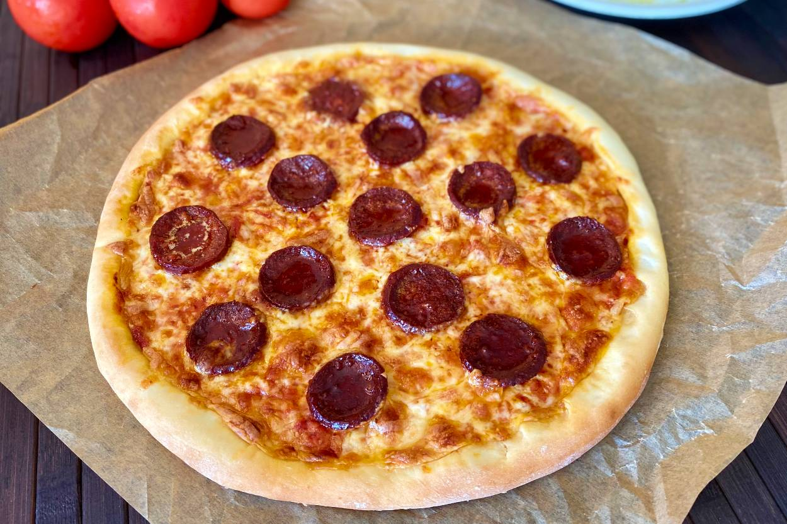

LASAGNA

How to Make Pizza
This delicious thin crust pizza dough recipe is so low maintenance, you can throw it together in just 15 minutes. It’s easy to make this thin crust pizza dough recipe with a few ingredients you may likely already have on hand. Here’s what you’ll need:
Ingredients
Yeast: This thin crust pizza dough starts with one teaspoon of active dry yeast.
Sugar and water: Activate the yeast in white sugar and lukewarm water.
Flour: This crispy thin crust calls for all-purpose flour instead of bread flour.
Salt: Salt tightens the gluten structure, which strengthens the dough and makes it more elastic.
steps
You’ll find the full, step-by-step recipe below — but here’s a brief overview of what you can expect when you make homemade thin crust pizza dough:
- Activate the yeast with sugar and water.
- Make the dough.
- Knead the dough
- Roll the dough into a circle.